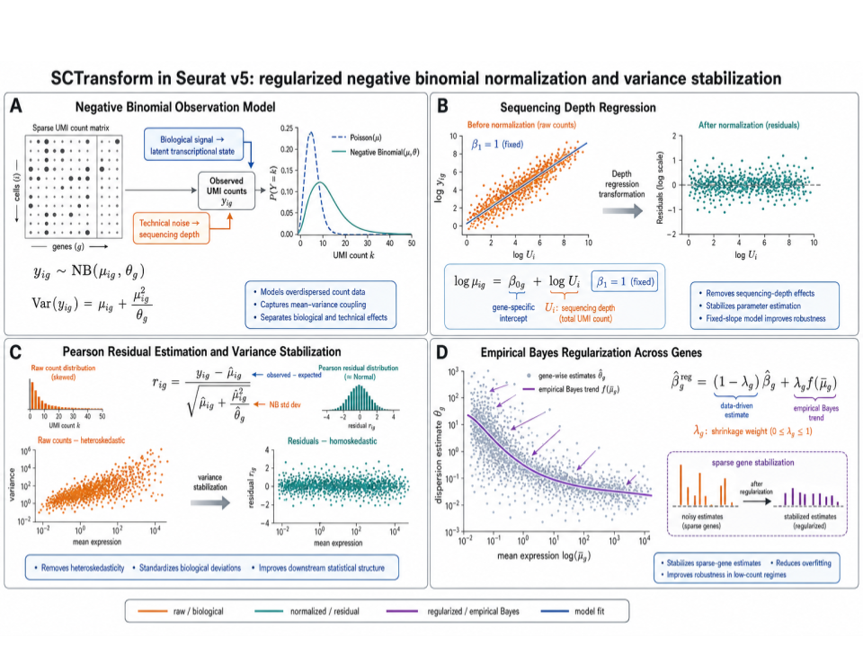
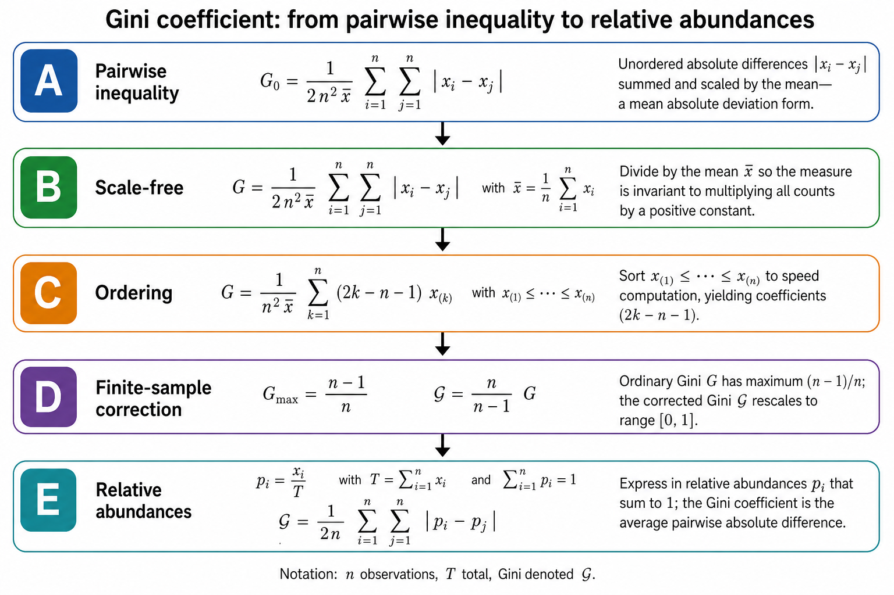
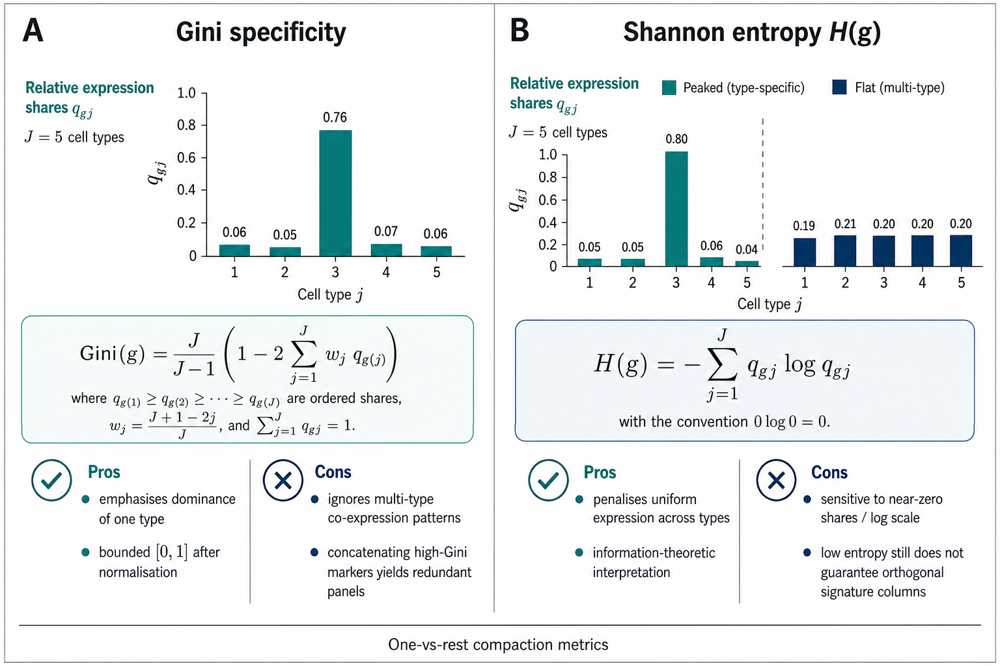
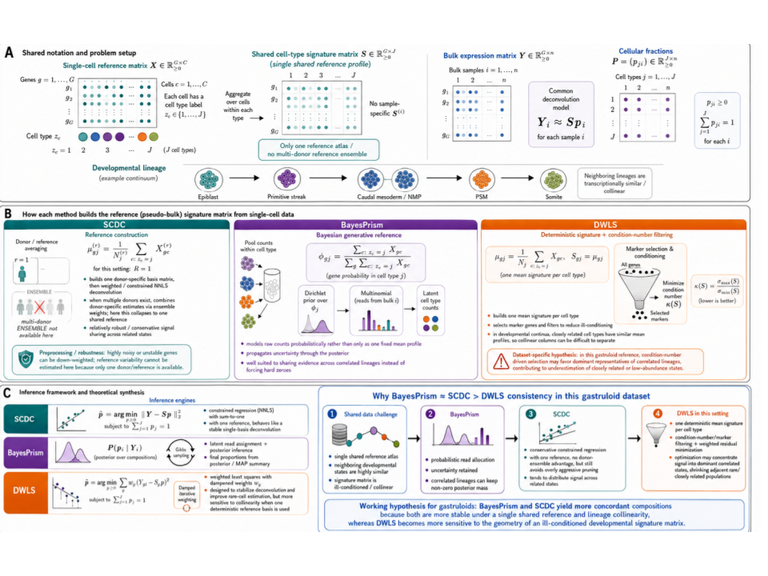
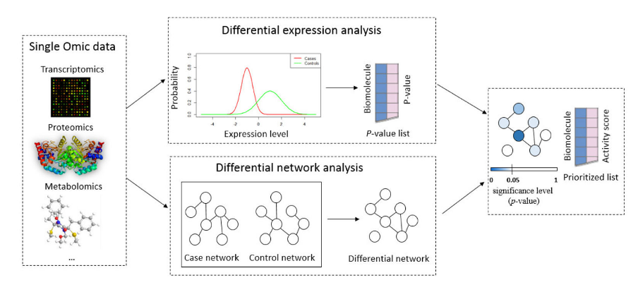
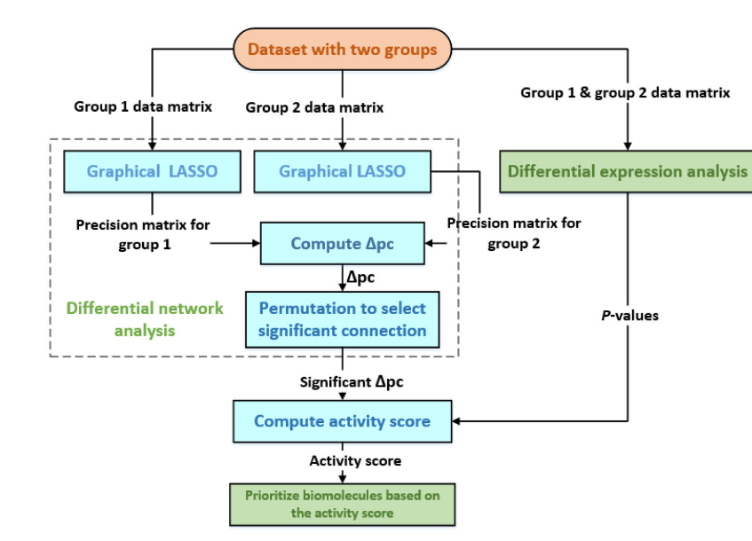
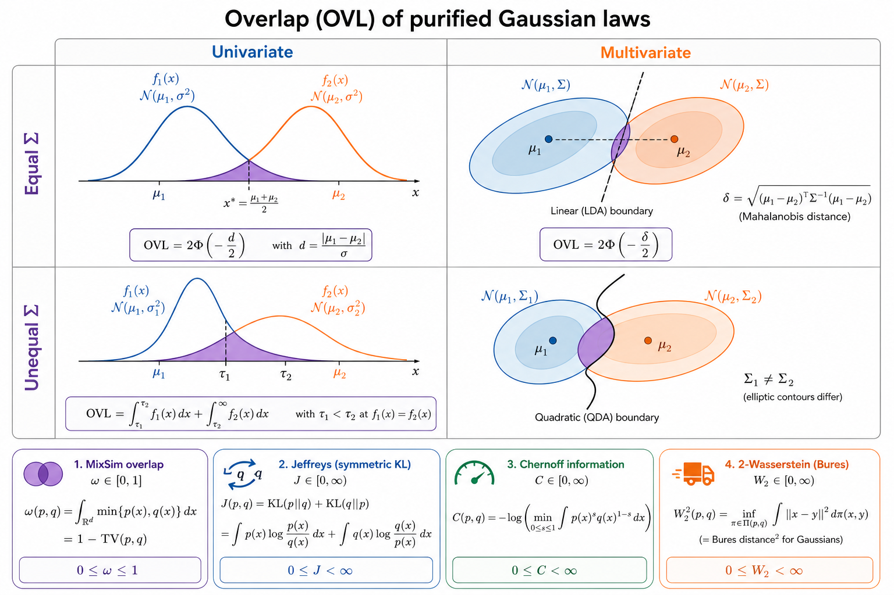
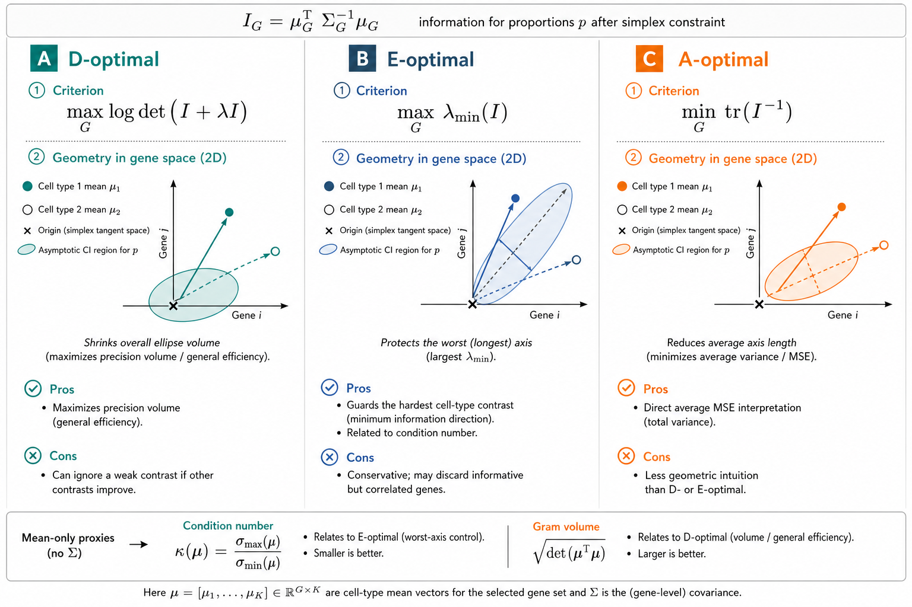
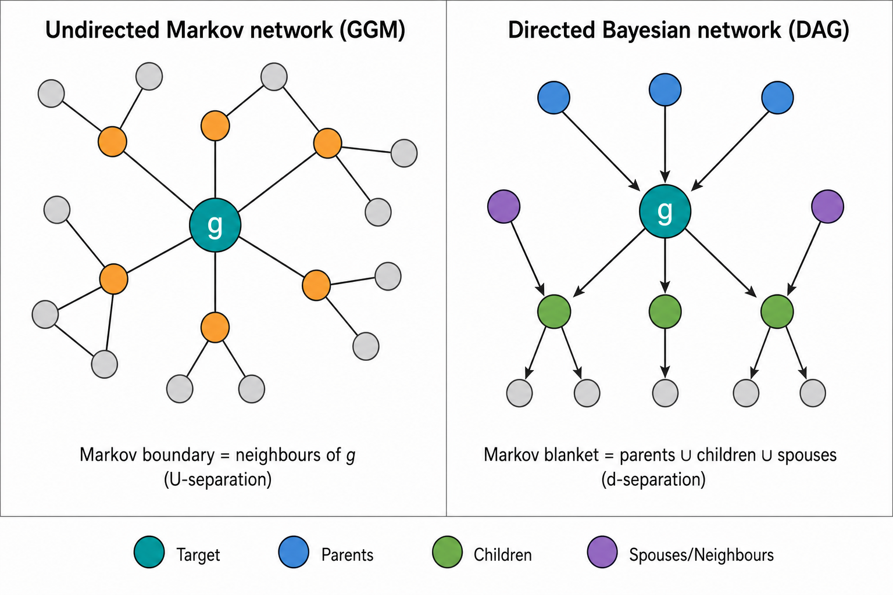
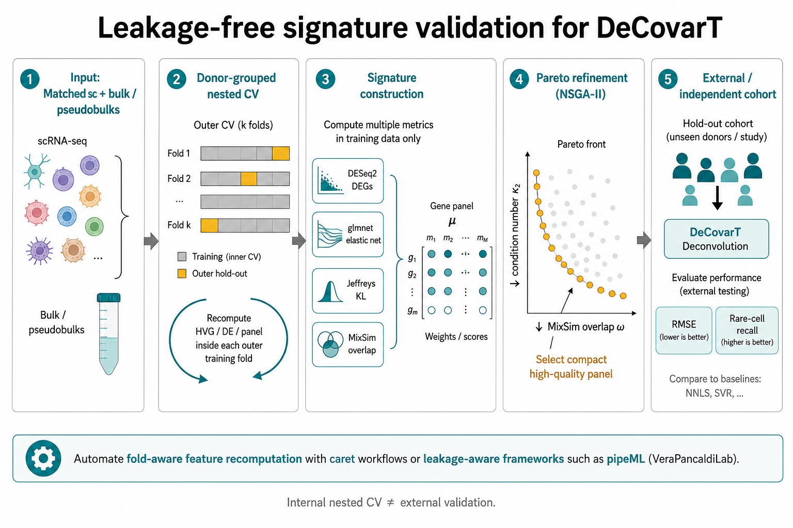

This vignette surveys feature selection for reference-based (signature-based) deconvolution—methods that recover cellular proportions \boldsymbol{p} from a bulk mixture using a purified expression design matrix (Gaspard-Boulinc et al. 2025; Avila Cobos et al. 2018; Sturm et al. 2019). Feature selection itself is a classical pre-modelling filter (Guyon and Elisseeff 2003). We deliberately exclude marker-based abundance scoring (enrichment / GSEA-style modules), which returns proxies of presence rather than a consensual gene panel suited to linear or probabilistic mixture models (Aran et al. 2017; Zhang et al. 2017).
The focus is second-generation signatures built from single-cell pseudobulks (CIBERSORTx, MuSiC, DWLS, Kassandra and related pipelines) (Newman et al. 2019; Wang et al. 2019; Tsoucas et al. 2019; Zaitsev et al. 2022), where the selected genes must discriminate all cell types in the signature jointly, not only one-versus-rest markers. Correlation-aware compact panels such as DUBStepR illustrate the same goal from a single-cell feature-selection angle (Ranjan et al. 2021).
Interactive signature refinement utilities (zero filtering, specificity binning, Gini / entropy compaction) are implemented in DeconvExplorer (omnideconv ecosystem; cite as software once added to packages.bib).
%%{init: {"theme": "sandstone"}}%%
flowchart TD
A["Reference μ, Σ from sc / bulk"] --> B["Univariate"]
A --> C["Multivariate"]
B --> B1["One vs others"]
B --> B2["All vs all"]
C --> C1["One vs others <br/> (GGM / DiffNet)"]
C --> C2["All vs all <br/> (κ, overlap)"]
B2 --> D["Consensual panel G"]
C2 --> D
D --> E["Perspectives: <br/> mechanistic / potency / archetypes"]
Figure 1: Layout of this vignette: univariate and multivariate selection, each split into one-versus-others then all-versus-all, followed by perspectives for continuous cell states.
Sections are cross-linked below: Section 2 builds moments; ?@sec-precision-timing places sparse \boldsymbol{\Omega}_{j} estimation after gene filtering; Section 3 and Section 4 score genes; Section 4.4 and Section 5 assemble a working panel; Section 6.5.1 and Section 5.1 assemble a pipeline; Section 6 covers continua, Markov blankets, mechanistic priors (see Section 6.1), information-optimal design as an extension (see Section 6.2), and caveats (see Section 6.5).
1 Notation
We align notation with the DeCovarT generative model. Let G genes and J cell types index the purified means \boldsymbol{\mu}=(\boldsymbol{\mu}_{.j})_{j=1}^{J}\in\mathbb{R}^{G\times J} and (optional) covariances \{\boldsymbol{\Sigma}_{j}\}_{j=1}^{J}. A bulk observation obeys
with \boldsymbol{\zeta}=(\boldsymbol{\mu},\{\boldsymbol{\Sigma}_{j}\}) and simplex \Delta^{J-1}=\{\boldsymbol{p}:p_{j}\ge 0,\sum_{j}p_{j}=1\}. For a gene subset \mathcal{G}\subseteq\{1,\ldots,G\}, write \boldsymbol{\mu}_{\mathcal{G}} for the corresponding rows. The condition number of a (possibly rectangular) design matrix \boldsymbol{X} is defined via singular values
with large \kappa_2 indicating multicollinearity and numerical instability (Gong and Szustakowski 2013; Newman et al. 2015). For a Gram matrix one has \kappa_2(\boldsymbol{X}^{\top}\boldsymbol{X})=\kappa_2(\boldsymbol{X})^{2}, so do not conflate the condition number of a signature with that of its Gram matrix. Eigenvalue ratios apply directly only to an appropriate symmetric positive-definite matrix (see also the synthetic scenarios vignette).
2 Preprocessing shared by all strategies
Before scoring genes:
Aggregate donor-level cell-type pseudobulks (not individual cells as independent replicates). Pseudobulking reduces sparsity and avoids treating cells as independent biological replicates in differential testing (Squair et al. 2021).
Estimate gene–cell-type means \mu_{gj} and variance components on a linear scale (counts, CPM, or TPM). Log-space breaks the mixture linearity in Equation 1. Variance stabilisation for single-cell QC is handled separately below (see Section 2.1).
Filter genes with poor bulk detectability, extreme zero inflation after pseudobulking, strong donor instability, or systematic sc–bulk discordance.
When the biological target is cell number rather than RNA mass, correct transcriptome-size differences across cell types (Lu et al. 2025).
2.1 Variance stabilisation and highly variable genes
Single-cell count matrices mix technical depth noise with biological cell-type variability. Regularised negative-binomial regression as in Seurat::SCTransform / sctransform separates the two via Pearson residuals(Hafemeister and Satija 2019):
Infer a depth-aware mean \hat{\mu}_{ig} for cell i and gene g (library size enters as an offset; optional covariates can be included in the design).
Infer a gene-wise dispersion \hat{\theta}_{g} with empirical-Bayes shrinkage and a local mean–dispersion trend across genes. Empirical-Bayes pooling across genes is especially relevant after donor-level pseudobulk aggregation, when the number of biological replicates per cell type is small and per-gene dispersion estimates are unstable; sharing strength with genes of similar mean expression stabilises \hat{\theta}_{g} in that low-n regime.
Compute Pearson residuals with formula Equation 3
r_{ig}
=
\frac{y_{ig}-\hat{\mu}_{ig}}
{\sqrt{\hat{\mu}_{ig}+\hat{\mu}_{ig}^{2}/\hat{\theta}_{g}}},
\tag{3} which are approximately homoscedastic and closer to Gaussian than raw counts—useful for PCA / HVG ranking, not as the linear mixture scale in Equation 1.
Figure 2 summarises the negative-binomial observation model, depth regression, residualisation, and empirical-Bayes shrinkage.

Figure 2: SCTransform workflow: negative-binomial mean–variance model, depth regression, Pearson residuals, and empirical-Bayes regularisation across genes.
After residualisation, retain a compact highly variable gene (HVG) universe before signature scoring. SCTransform / Pearson residuals correct for sequencing depth while preserving biological heterogeneity (Hafemeister and Satija 2019). Do not regress out cell type at this HVG stage: that would remove exactly the inter-type signal the panel is meant to capture. A practical design that emphasises cell-type structure (rather than a global intercept) is
\sim\ \texttt{CellType}
without intercept, so the estimated coefficients contrast each labelled type against the global mean expression across cell types and samples. Rank genes by residual variance (or the corresponding model F / deviance explained) and keep the top 2{,}000 HVGs as the working universe for the selectors in Section 3 and Section 4. Downstream deconvolution still uses linear-scale\mu_{gj} on that gene set (Sturm et al. 2019).
Tip 1: ℹ️ Sanity check after SCTransform
Per gene, residual histograms and mean–variance plots of r_{ig} should look roughly Gaussian and flat. Strong remaining depth trends or heavy tails indicate that the offset / covariate design is misspecified before any marker ranking.
Note 2: ℹ️ When to estimate sparse precision matrices
Sparse cell-type precision matrices \boldsymbol{\Omega}_{j} are inputs to multivariate selectors. However, they should not be estimated on the full transcriptome first, since even high dimensional techniques, such as graphical lasso is computationally heavy an unstable when G\gg n.
Instead, it is recommended to filter and subset first, then estimate networks.
3 Univariate approaches
Univariate selectors score each gene marginally (or with a simple contrast) and ignore partial correlations among genes.
3.1.1 Differential expression and fold-change ranks
limma–voom, edgeR and DESeq2 remain the workhorses for one-versus-rest contrasts (Ritchie et al. 2015; Robinson et al. 2010; Love et al. 2014). CIBERSORT retains genes with adjusted p\le 0.3 ordered by decreasing fold-change before a global condition-number prune (Newman et al. 2015). Abbas et al. keep genes that exceed the second- and third-ranked cell types, then choose the panel with smallest \kappa(Abbas et al. 2009). quanTIseq / xCell-style filters further drop non-haematopoietic contaminants (Finotello et al. 2019; Aran et al. 2017).
3.1.2 ANOVA F-test
Wang et al. rank genes by the nested-model F statistic comparing a cell-type factor to an intercept-only model (Wang et al. 2010). For gene g with expression x_{gi} in sample i and cell-type labels z_{i}\in\{1,\ldots,J\},
where \mathrm{SSR}_{0}=\sum_{i}(x_{gi}-\bar{x}_{g})^{2} and \mathrm{SSR}_{1}=\sum_{j}\sum_{i:z_{i}=j}(x_{gi}-\bar{x}_{gj})^{2}. Large F_{g} indicates that cell-type means explain a substantial share of gene variance.
Classical ANOVA inference for Equation 4 assumes, among other things:
independent observations (hence donor-level pseudobulks rather than cells as replicates; Section 2);
roughly Gaussian conditional residualsx_{gi}\mid z_{i}=j\sim\mathcal{N}(\mu_{gj},\sigma_{g}^{2}) with common within-type variance (homoscedasticity);
no strong outliers (leverage effect) or unmodelled batch structure (latent variable).
When residuals are heavy-tailed or variance scales with the mean, prefer a GLM / limma–voom pipeline (Ritchie et al. 2015) and treat F_{g} as a ranking score rather than a calibrated p-value.
3.1.3 Gini and entropy specificity
BioQC and DeconvExplorer compact signatures with Gini or entropy scores over the row \boldsymbol{\mu}_{g\cdot}(Zhang et al. 2017). Write non-negative mean expression of gene g across the J cell types as relative abundances (a discrete probability distribution over types)
so \boldsymbol{p}_{g}=(p_{g1},\ldots,p_{gJ}) lies on the simplex. Both specificity scores are functions of these probabilities.
Shannon entropy measures diversity / uncertainty of the type distribution:
H(g)
=
-\sum_{j=1}^{J}p_{gj}\log p_{gj},
\tag{6}
with the convention 0\log 0=0. Low H means a few types dominate; high H means mass is spread more evenly. With natural log the unit is nats; with \log_2, bits. The maximum over supports of size J_{+} (nonzero p_{gj}) is \log J_{+}, so the normalised entropy H_{\mathrm{norm}}(g)=H(g)/\log J_{+} lies in [0,1].
Gini coefficient. Denote the coefficient by \mathcal{G} (to avoid clash with the gene count G) and write n=J for the number of type shares. Starting from pairwise absolute differences |p_{gi}-p_{gj}| (a mean absolute deviation over ordered pairs), dividing by the mean to obtain a scale-free index, ordering the shares p_{g(1)}\le\cdots\le p_{g(n)} for an O(n) formula, and optionally applying the finite-sample factor n/(n-1) so that the corrected index reaches 1, one obtains
Figure 3 summarises this derivation; the uncorrected empirical maximum is (n-1)/n, not 1. After the finite-sample correction, \mathcal{G}_{\mathrm{corr}}\in[0,1] with 0 for equal shares and 1 when a single type carries all mass.
High Gini (or low entropy) flags genes whose probability mass concentrates on few types—useful for one-versus-rest compaction. After normalisation both scores live on [0,1] with reciprocal interpretation: high \mathcal{G}_{\mathrm{corr}} / low H_{\mathrm{norm}} means concentrated (specific); low \mathcal{G}_{\mathrm{corr}} / high H_{\mathrm{norm}} means diffuse. There is no universal one-to-one map between them (Zhang et al. 2017). Figure 4 contrasts the two scores.

Figure 3: Derivation of the Gini coefficient: pairwise absolute differences, scale-free normalisation by the mean, sorted-data formula, finite-sample correction to [0,1], and expression in relative abundances p_{j}.

Figure 4: Gini versus Shannon entropy for cell-type specificity: formulas, simplified share plots, and panel-wise pros/cons for one-versus-rest compaction.
“Redundancy when panels are concatenated” means the following. High Gini markers are specific, but not automatically non-redundant: a gene with high Gini for type A and another with high Gini for type B need not be collinear if they separate different contrasts, yet they can be nearly collinear as rows of \boldsymbol{\mu} when both types co-express correlated programmes (shared lineage, activation axis). Redundancy arises mainly when multiple markers reflect the same contrast. Concatenating the top-k genes per type therefore often inflates |\mathcal{G}| without improving the geometry of \boldsymbol{\mu}_{\mathcal{G}}: \kappa_2(\boldsymbol{\mu}_{\mathcal{G}}) stays large and NNLS / SVR / GLS remain unstable (Newman et al. 2015). Likewise, edges in a partial-correlation graph flag candidate influences, not assured independence. That is why Section 3.1 must be followed by an all-versus-all stage (see Section 3.2 and Section 4.3).
Warning 3: ⚠️ Limitation of one-versus-rest concatenation
Union of per-type markers often yields a multicollinear \boldsymbol{\mu}_{\mathcal{G}} that is still too large for stable NNLS / SVR / GLS (Newman et al. 2015; Avila Cobos et al. 2018). A global all-versus-all refinement is therefore required (see Section 4.3).
3.2 All versus all
3.2.1 Genetic algorithms (AutoGeneS)
AutoGeneS searches gene subsets with a multi-objective genetic algorithm that minimises inter-population correlation while maximising centroid distance(Aliee and Theis 2021). Related multi-objective genetic searches appear in network module discovery (e.g. MOGAMUN) (Novoa-del-Toro et al. 2021). AutoGeneS is explicitly all-versus-all: the loss is defined on the full J-column signature rather than on independent one-versus-rest lists.
4 Multivariate approaches
Multivariate selectors use joint dependence—covariance, precision, or information matrices—so that a gene is scored by how it improves identifiability of \boldsymbol{p} under Equation 1.
4.1 Limitations of mean-only condition numbers
Condition-number pruning (see Equation 2) operates almost exclusively on the mean signature \boldsymbol{\mu}_{\mathcal{G}}. It does not see covariance rewiring: two closely related types can share nearly collinear means yet differ in their precision graphs \boldsymbol{\Omega}_{j}=\boldsymbol{\Sigma}_{j}^{-1}. In continua—gastruloids, differentiation trajectories, activation gradients—neighbouring states are transcriptionally similar by construction, so \kappa(\boldsymbol{\mu}) is intrinsically large. Aggressive \kappa-minimisation then tends to keep a few dominant lineage representatives and drop genes that separate neighbours only through network rewiring rather than large mean fold-changes (Tsoucas et al. 2019; Wang et al. 2019).
Figure 5 illustrates this failure mode for a gastruloid lineage continuum: mean-conditioned DWLS-style selection can under-represent adjacent or low-abundance states relative to methods that retain softer, covariance-aware allocation.

Figure 5: Condition-number pruning on correlated developmental cell types (gastruloid continuum). Mean-only \kappa filtering can concentrate signal in dominant collinear lineages and shrink closely related states.
Important 4: ⚠️ When \kappa(\boldsymbol{\mu}) is not enough
Use \kappa as a diagnostic of mean geometry, not as the sole selector, whenever cell states form a continuum or when discriminatory signal lives in \boldsymbol{\Sigma}_{j} (see Section 4.2.1 and Section 6.2). Pair it with overlap (see Equation 12), Fisher information (see Equation 17), or differential-network candidates.
4.2 One versus others
Univariate DGE ignores gene–gene interactions and therefore requires aggressive multiple-testing correction without modelling network rewiring. Differential-network and GGM methods address that gap.
4.2.1INDEED: an ad-hoc approach to Differential networks
INDEED combines mean (fold-change) evidence with tests of changes in partial correlation, ranking genes that both shift in mean and rewire neighbourhood structure (Zuo et al. 2016). Figure 6 summarises the graphical abstract and computational pipeline.

(a) INDEED graphical abstract: parallel differential expression and differential-network tracks merged into an activity-ranked biomarker list (adapted from Zuo et al. (2016)).

(b) INDEED pipeline: group-wise graphical lasso, differential partial correlations \Delta\mathrm{pc} with permutation filtering, DE p-values, and activity-score prioritisation (adapted from Zuo et al. (2016)).
Figure 6: INDEED integrates differential expression with differential network structure to prioritise biomolecules.
For groups k\in\{1,2\} (e.g. focal cell type versus the rest), let \boldsymbol{\Omega}^{(k)} be a sparse precision estimate from graphical lasso. Partial correlations are
Significant edges are retained after a permutation (or bootstrap) null on \Delta\mathrm{pc}_{gg'}. With a differential-expression p-value p_{g}^{\mathrm{DE}} for gene g, INDEED forms an activity score that multiplies mean evidence by differential connectivity, schematically
and ranks genes by \mathrm{AS}_{g}(Zuo et al. 2016). Relative to pure DGE, this favours genes whose local undirected neighbourhood (Markov boundary in the GGM sense; Section 6.4) differs between the focal type and the rest. Related ideas appear in weighted graphical-lasso pipelines with PPI priors and differential-network scores (DNS).
4.2.2 Janine and the Cooperative Lasso: a statistically grounded approach to differential networks
Cell-type precision matrices \boldsymbol{\Omega}_{j}=\boldsymbol{\Sigma}_{j}^{-1} estimated by graphical lasso are shrunk; non-zero partial correlations are typically underestimated. A practical mitigation is to take the gLasso support as topological constraints and re-estimate by constrained MLE when the graph is chordal (otherwise the mapping is non-trivial) (Dahl et al. 2005). Cooperative / sign-coherent group lasso penalties can encode pathway modules and PPI-informed edge weights (Chiquet et al. 2012). PPI priors also shrink the combinatorial space of undirected graphs explored per cell type.
Warning 5: ⚠️ From one-versus-others networks to a panel
Network-based one-versus-others lists still concatenate into a redundant design (see Note 3). Treat them as candidate generators for the all-versus-all stage in Section 4.3.
4.3 All versus all
4.3.1 Variance-weighted condition number
With gene-specific uncertainties \tau_{g}^{2} (biological + sampling + optional sc–bulk discordance), standardise rows and evaluate conditioning in the (J-1)-dimensional contrast space induced by \sum_{j}p_{j}=1:
where \boldsymbol{W}_{\mathcal{G}}=\mathrm{diag}(1/\tau_{g}^{2}) and \boldsymbol{C} removes the common-expression direction. Unweighted \kappa(\boldsymbol{\mu}_{\mathcal{G}}) alone can favour quiet but biased genes (Gong and Szustakowski 2013); see also Section 4.1.
4.3.2 Sparse classifiers as candidate generators
Beyond geometric scores on \boldsymbol{\mu} and \boldsymbol{\Sigma}, multiclass models that treat cell type as a categorical response are useful candidate generators—not as final deconvolution solvers. Embed them in stability selection: resample at the donor level, tune penalties inside each resample, and keep genes selected in a high fraction of replicates (Meinshausen and Bühlmann 2010).
Multinomial logistic regression with elastic net. Combined \ell_1 / \ell_2 penalties yield sparse class weights while shrinking correlated genes jointly (Zou and Hastie 2005; Friedman et al. 2025). Suitable when the number of donor-level pseudobulks is moderate to large.
Sparse / penalised quadratic discriminant analysis. Maximises a between- / within-class variance ratio with an \ell_1 penalty on loadings, favouring a compact, non-redundant discriminant gene set (Witten and Tibshirani 2011).
Group and tree-guided lasso. An \ell_1/\ell_2 group penalty selects or drops whole genes or pathways together (Yuan and Lin 2006); hierarchical / tree-guided variants share strength across related cell-type labels when a lineage taxonomy is known.
Treat non-zero coefficients as proposals for Section 4.3.4, then refine by nested cross-validated signature selection; see Section 6.5.1.
Table 1: Sparse multiclass methods as panel candidate generators.
Method
Role
Caveat
Multinomial elastic net
Joint classification; \(\ell_1\) sparsity + \(\ell_2\) grouping of correlates
May still retain collinear markers unless \(\ell_2\) is strong
Sparse LDA
Direct class-separation criterion with sparse loadings
Needs more observations than pure logistic paths
Group / tree lasso
Pathway- or hierarchy-aware block selection
Requires predefined groups or a taxonomy tree
4.3.3 Information-optimal panel design (pointer)
D- / E- / A-optimal criteria based on the mixture Fisher information, including the proportion-dependent bulk covariance \boldsymbol{V}(\boldsymbol{p}), are developed as a perspective / extension in Section 6.2. In the main multivariate path we prefer overlap and related separation monitors (Section 4.3.4) together with nested cross-validated panel selection (Section 6.5.1).
4.3.4 Marker-separation metrics
AutoGeneS optimises correlation and centroid distance separately (Aliee and Theis 2021). Probabilistic alternatives fold mean and covariance structure into a single separation score for the purified laws \mathcal{N}(\boldsymbol{\mu}_{.j},\boldsymbol{\Sigma}_{j}). Figure 7 contrasts geometric overlap \int\min(f_{j},f_{\ell}) for univariate versus multivariate Gaussians (equal or unequal second moments) and places the four monitors below—MixSim overlap, Jeffreys, Chernoff and W_{2}—on a common footing.

Figure 7: Overlap of purified Gaussians: univariate (left) versus multivariate (right) under equal or unequal covariance, with MixSim overlap, Jeffreys (symmetric KL), Chernoff information and 2-Wasserstein / Bures as companion metrics.
Note 6: ℹ️ Probabilistic separation metrics
MixSim pairwise overlap. For densities f_{j} and f_{\ell}, the one-sided directional mass \Omega_{j\ell}=\Pr_{X\sim f_{j}}(X\text{ classified as }\ell) (Bayes / MAP rule) yields the pairwise overlap
(with the equal-prior geometric reading \omega_{j\ell}=\int\min(f_{j},f_{\ell}) as a special case), taking the value 0 for perfectly separable Gaussians and approaching 1 for identical laws (Melnykov et al. 2012, 2024). Mixture proportions \boldsymbol{p} already enter the MAP rule inside MixSim::overlap(); they must not be multiplied into \Omega_{j\ell} a second time when reporting pairwise overlap (that double-counts the prior and no longer matches MixSim’s BarOmega).
is the best exponential error exponent for distinguishing the two laws. For Gaussians the integral is closed in t after substituting \boldsymbol{\Sigma}_{t}=t\boldsymbol{\Sigma}_{\ell}+(1-t)\boldsymbol{\Sigma}_{j}, but t^{\star} is found numerically. Large C implies strong separability (P_{\mathrm{error}}\le e^{-C}).
2-Wasserstein / Bures geometry. The squared W_{2} distance between Gaussians is
with \mathfrak{B}^{2} the Bures metric (matrix square-root term). It is a true metric and reduces to Euclidean mean distance when covariances coincide.
Table 2: Comparison of purified-Gaussian separation metrics for panel monitoring.
Metric
Range
Focus
Notes
MixSim overlap
\([0, 1]\)
Bayes misclassification mass
Monte Carlo in MixSim; intuitive
Jeffreys (sym. KL)
\([0, \infty)\)
Average log-likelihood gap
Closed form for Gaussians
Chernoff information
\([0, \infty)\)
Optimal error exponent
Needs a 1-D line search in \(t\)
\(W_{2}\) (2-Wasserstein)
\([0, \infty)\)
Geometric mean + covariance shape
Matrix square-root cost \(O(d^{3})\)
Overlap / Jeffreys / Chernoff / W_{2} monitor class separation of purified laws. Information-optimal (D/E/A) criteria in Equation 18 instead target estimation of \boldsymbol{p} under Equation 1 (Section 6.2); the two families need not agree. Prefer overlap for an interpretable error rate, Jeffreys for a closed-form divergence, Chernoff when a single discriminability index is desired, and W_{2} when covariance shape matters (Melnykov et al. 2024; Aliee and Theis 2021).
4.4 Conclusion: refined selection of four complementary scores
For a first rough candidate pool we retain four complementary screens rather than the full metric zoo. Two are label-aware selectors on pseudobulks; two are distributional discrepancies between purified Gaussians:
DESeq2 DEGs. Negative-binomial GLM contrasts on donor-level pseudobulks flag mean shifts across types (Love et al. 2014). They do not encode covariance geometry, so they seed the panel rather than finish it.
glmnet multinomial elastic net. Sparse discriminative coefficients for cell-type labels (Friedman et al. 2025; Zou and Hastie 2005). Relative to sparse QDA, elastic net is less sensitive to non-Gaussian residuals and to poorly estimated type-specific covariances in the G\gg n pseudobulk regime; treat non-zeros as proposals (see Section 4.3.2).
Jeffreys (symmetric KL). Closed-form mean–covariance discrepancy J(f_{j},f_{\ell}) (Equation 13): information-theoretic, unbounded, sensitive to both location and second-moment mismatch.
MixSim overlap. Bayes misclassification mass \omega_{j\ell}\in[0,1] (Equation 11): the most direct probabilistic reading of confusion between purified laws (Melnykov et al. 2024, 2012).
Jeffreys and MixSim therefore capture different aspects of the same pairwise Gaussian discrepancy—relative entropy versus classification error—while DESeq2 and glmnet supply orthogonal mean / discriminative evidence. Take the union of top-ranked genes from each screen (with donor-level stability where possible) as the working universe \mathcal{G}_{0} before multi-objective compaction.
5 Multi-objective panel refinement
The shortlist \mathcal{G}_{0} is typically still too large and collinear for stable deconvolution. Following AutoGeneS(Aliee and Theis 2021), refine a binary gene mask by a bi-objective search on the purified moments restricted to the selected genes:
minimise the panel condition number \kappa_2(\boldsymbol{\mu}_{\mathcal{G}}) (or a robust surrogate such as \log\kappa_2; see Equation 2);
minimise average MixSim overlap \overline{\omega} (or maximise average Jeffreys, if preferred) over type pairs (Section 4.3.4).
These objectives trade off: genes that separate rare types can inflate \kappa_2, while an aggressively well-conditioned panel can discard the most discriminatory markers. A Pareto front of non-dominated panels is therefore more informative than a single weighted scalar.
Search. Greedy / Fedorov exchange remains a transparent baseline when the objective is nearly unimodal. For the dual criterion we prefer a multi-objective genetic algorithm. The CRAN package mco implements NSGA-II via mco::nsga2(), which returns a population approximating the Pareto set when the fitness returns a length-two vector to minimise (Mersmann 2024). Encode the decision variables as continuous masks in [0,1]^{|\mathcal{G}_{0}|} (thresholded to a target panel size) or as a lower-dimensional embedding of gene blocks; evaluate \kappa_2 and \overline{\omega} on the induced panel.
# Illustrative NSGA-II call (requires {mco}). Replace bi_objective_func# with panel <U+03BA>2 and MixSim overlap computed from <U+03BC>_G and <U+03A3>_j|G.bi_objective_func<-function(x){# x: decision variables (e.g. soft gene weights in [0, 1]^d)f1<-x[1]^2+x[2]^2# stand-in for <U+03BA>2(<U+03BC>_G)f2<-(x[1]-1)^2+x[2]^2# stand-in for average MixSim overlapc(f1, f2)}mco_res<-mco::nsga2( fn =bi_objective_func, idim =2, odim =2, lower.bounds =c(0, 0), upper.bounds =c(1, 1), popsize =100, generations =50)# Inspect non-dominated panels: mco_res$value (objectives), mco_res$par
Scalar alternatives (weighted sums inside GA / GenSA) remain useful for auditable single-objective refinement; report several Pareto-representative panels rather than one arbitrary knee when handing the signature to nested CV (Section 6.5.1).
5.1 Recommended pipeline
Reference moments (see Section 2). Donor-level pseudobulks; estimate \boldsymbol{\mu} and variance components on a linear scale; optional SCTransform / top-2{,}000 HVGs (see Section 2.1) without regressing out cell type.
Reliability filter. Drop unstable / undetectable / discordant genes; optionally inflate \tau_{g}^{2} by observed sc–bulk discrepancy.
Four-score shortlist (see Section 4.4). Union of DESeq2 DEGs, glmnet elastic-net hits, high Jeffreys, and low MixSim overlap (optionally with Gini / INDEED / stability selection) → working universe \mathcal{G}_{0}.
Pareto panel refinement (see Section 5). NSGA-II / greedy search minimising \kappa_2(\boldsymbol{\mu}_{\mathcal{G}}) and average overlap; keep several non-dominated panels.
Cross-validated panel selection (see Section 6.5.1). Use donor-grouped nested cross-validation on matched bulk aliquots; select the panel and its size in the inner loop and estimate deconvolution performance in the outer loop. Heed Section 6.5 on external validation.
Optional extension (see Section 6.2). Information-optimal (D/E/A) subset search over a composition grid if Fisher-design criteria are desired beyond overlap monitors.
Mechanistic annotation (see Section 6.1). Optional CARNIVAL / CORNETO pathway hypotheses as soft coverage constraints.
%%{init: {"theme": "sandstone"}}%%
flowchart TD
A["Donor split + pseudobulk"] --> B["SCTransform HVGs <br/> (no cell-type regression)"]
B --> C["Reliability / dropout filter"]
C --> D["Four-score shortlist: <br/> DESeq2 + glmnet + <br/> Jeffreys + MixSim"]
D --> E["Stability selection"]
E --> F["NSGA-II / greedy Pareto <br/> min κ2 and overlap"]
F --> G["Nested CV panel selection <br/> + held-out donor assessment"]
G --> H["Optional D/E/A design <br/> (perspective)"]
H --> I["CARNIVAL / CORNETO <br/> annotation"]
I --> J["External cohort check <br/> (see caveats)"]
Figure 8: Recommended reference-based feature-selection pipeline from donor pseudobulks to validated, mechanistically annotated panels.
The distinctive contribution for DeCovarT-style second-generation models is a bulk-calibrated, variance-weighted information criterion plus overlap, exploiting paired sc/bulk designs when available.
6 Perspectives
6.1 Mechanistic priors
PPI / TF networks and pathway modules can regularise both GGM estimation and cooperative penalties (Chiquet et al. 2012; Zuo et al. 2016), shrinking the search toward biologically plausible supports rather than purely statistical markers.
CARNIVAL contextualises a prior-knowledge network (e.g. OmniPath) from gene-expression footprints via integer linear programming: TF / pathway activity scores (DoRothEA and related) are matched to upstream regulators, yielding directed subnetworks and key mediators for each cell-type contrast (Liu et al. 2019). For panel design, annotate candidate markers by membership in (or upstream of) inferred pathways, or softly prioritise genes that lie on divergent axes between types. Outputs are hypotheses: they depend on the PKN and activity discretisation, may be non-unique, and do not prove causality.
CORNETO casts multi-sample network inference as a joint mixed-integer programme with structured sparsity, recovering a shared backbone plus sample- or cell-type-specific edges across directed, undirected, signed, or hypergraph priors (Rodriguez-Mier et al. 2025). Cell-specific edges highlight discriminative modules; shared edges flag core programmes. After a statistically chosen panel, require coverage of distinct CORNETO modules, or add a soft term that rewards selecting genes from different subnetworks. Limitations mirror CARNIVAL: solver cost, PKN dependence, and false-positive / missing edges.
Use CARNIVAL / CORNETO for annotation and soft constraints, not as a replacement for overlap in Equation 12 or Fisher design in Equation 18.
6.2 Information-optimal design as a perspective
As a potential extension beyond mean geometry and overlap monitors, candidate panels can be scored by alphabetical optimality criteria on the mixture Fisher information. Under the DeCovarT mixture in Equation 1, write the bulk covariance as
Unlike ordinary linear regression, \boldsymbol{V} depends on \boldsymbol{p}. With mean map \boldsymbol{M}(\boldsymbol{p})=\boldsymbol{\mu}\boldsymbol{p} and Jacobian columns \boldsymbol{\mu}_{.j}-\boldsymbol{\mu}_{.J} in the (J-1)-dimensional simplex contrast space, the Gaussian Fisher information is
where \partial\boldsymbol{V}/\partial p_{j}=2p_{j}\boldsymbol{\Sigma}_{j}. The first term is mean information; the second captures information from the changing covariance. For a gene panel \mathcal{G}, restrict rows of \boldsymbol{\mu} and \boldsymbol{\Sigma}_{j} accordingly. When \boldsymbol{V} is treated as fixed (or diagonal / shrinkage on \mathcal{G}), Equation 17 collapses to the familiar whitened Gram
Evaluate candidate panels over a composition grid\mathcal{P}\subset\Delta^{J-1} (balanced, rare-cell, sparse, near-collinear scenarios) and report worst-case and average criteria, so a design that only works at one corner of the simplex is rejected.
Figure 9 recalls the three criteria geometrically.

Figure 9: D-, E- and A-optimal design for gene-panel selection: shared Fisher information \mathcal{I}_{\mathcal{G}}, confidence-ellipse intuition, and links to condition number / Gram volume.
Note 7: ℹ️ Pros and cons of D / E / A
D-optimality (\log\det): shrinks the volume of the asymptotic confidence ellipsoid for \boldsymbol{p}. Efficient in an average sense; can still leave one weak contrast if other directions improve.
E-optimality (\lambda_{\min}): protects the worst contrast. Closest in spirit to minimising \kappa_2(\mathcal{I}_{\mathcal{G}}).
A-optimality (\operatorname{tr}\mathcal{I}^{-1}): minimises average parameter variance under the Gaussian approximation.
Prefer shrinkage covariances and a small ridge \epsilon\boldsymbol{I} when |\mathcal{G}| is moderate. For combinatorial search, use a greedy / Fedorov exchange as the auditable baseline, and a genetic algorithm only when the objective mixes covariance, overlap, or mechanistic constraints; see Section 6.1.
Relation to\kappa and the Gram volume. If \boldsymbol{\Sigma}_{\mathcal{G}}=\boldsymbol{I}, then \mathcal{I}_{\mathcal{G}}=\boldsymbol{\mu}_{\mathcal{G}}^{\top}\boldsymbol{\mu}_{\mathcal{G}} and D-optimality maximises the log Gram volume of the mean columns. E-optimality maximises \lambda_{\min} of that Gram matrix and is a cousin of minimising \kappa_2(\boldsymbol{\mu}_{\mathcal{G}}) (see Equation 2). The synthetic scenarios vignette discusses the same objects as AutoGeneS-style scalar summaries of \boldsymbol{\mu}.
6.2.0.1 Software for D-optimal search in R
For standard D-optimal experiments on a candidate factor grid, skpr is a strong general-purpose choice (D / A / E / G / I, blocking, diagnostics). AlgDesign::optFederov() remains a lightweight Fedorov exchange over a finite candidate set. Neither package natively implements the proportion-dependent FIM in Equation 17, so for DeCovarT panels we recommend a custom objective plus greedy / exchange search, with GA only as optional refinement.
# Conventional D-optimal design on a candidate grid (illustration only).# Requires the skpr package (CRAN); not used at knit time.candidates<-expand.grid( x1 =seq(-1, 1, length.out =11), x2 =seq(-1, 1, length.out =11))design<-skpr::gen_design( candidateset =candidates, model =~x1+x2+I(x1^2)+I(x2^2)+x1:x2, trials =20, optimality ="D", repeats =100)skpr::get_optimality(design, "D")
# Robust D-score for a gene panel over composition scenarios.# `information_matrices[[s]]` is I_G(p_s) for scenario s (J-1 dim.).d_objective<-function(selected, information_matrices, ridge=1e-8){scores<-vapply(information_matrices, function(info_full){info_s<-info_full[selected, selected, drop =FALSE]info_s<-info_s+diag(ridge, nrow(info_s))as.numeric(determinant(info_s, logarithm =TRUE)$modulus)}, numeric(1))min(scores)}# Optimise the binary selection with a custom exchange / GenSA / GA.
6.3 Continuous states, potency and archetypes
Many tissues are better described by continua (differentiation trajectories, activation gradients) than by discrete labels. In that regime, a finite J-column signature is a piecewise approximation of an archetype geometry (Hart et al. 2015) or a potency axis (Gulati et al. 2020): genes should separate extreme vertices and resolve interior mixtures along trajectories. Open directions include replacing hard one-versus-others contrasts with scores along inferred latent axes, and evaluating overlap / Fisher information on continuous rather than categorical components. Until such methods mature, hierarchical discrete panels (lineage → subtype) remain a pragmatic compromise (Wang et al. 2019). See also Section 4.1.
6.4 Seeds and undirected Markov boundaries
A complementary panel-expansion strategy starts from a small set of seeds—genes that are already highly discriminatory for \boldsymbol{p} under Equation 1 or Equation 9—then grows each seed by its Markov boundary in a cell-type (or differential) GGM.
In an undirected graphical model, a Markov blanket of gene g is any set S such that g is conditionally independent of all other genes given S; a Markov boundary is a minimal such set (Pearl 1988). For a Gaussian Markov random field / GGM, the Markov boundary of g coincides with its graph neighbours: the indices g' with \omega_{gg'}\neq 0 in \boldsymbol{\Omega}(Bolin et al. 2026). Expanding seeds by these neighbours therefore adds genes that are not redundant once the seed is conditioned on—they carry residual information about the local dependency structure.
Important 8: ⚠️ Undirected (U) separation, not d-separation
This construction uses the undirected Markov property (conditioning on neighbours in \boldsymbol{\Omega}). Classical d-separation applies to directed acyclic Gaussian Bayesian networks and is the wrong language for GGM / glasso supports. Do not treat directed path blocking rules as interchangeable with undirected Markov boundaries (Pearl 1988; Bolin et al. 2026). Figure 10 contrasts the undirected Markov boundary (neighbours of the target) with the directed Markov blanket (parents, children and spouses).

Figure 10: Undirected Markov boundary versus directed Markov blanket: left, neighbours of target g in a GGM; right, parents, children and spouses in a DAG under d-separation.
Operational sketch:
Select seeds by mean separation, INDEED activity (see Equation 9), or high contribution to \mathcal{I}_{\mathcal{G}} (see Equation 17).
Estimate \boldsymbol{\Omega}_{j} (or a differential precision) on the HVG universe (see Section 2.1).
For each seed g, add its undirected neighbours \{g':\omega_{gg'}\neq 0\} (the Markov boundary).
Re-run all-versus-all compaction (see Section 6.2, Section 4.3.4) so that boundary expansion does not reintroduce mean-collinear bulk (see Note 3).
6.5 Caveats and leakage-free external validation
The screens and multi-objective refinement above are proposal generators, not a finished validation protocol. Three limitations dominate current practice in this vignette:
Strong Gaussian modelling. Overlap, Jeffreys, Chernoff and W_{2} are evaluated under purified laws \mathcal{N}(\boldsymbol{\mu}_{.j},\boldsymbol{\Sigma}_{j}). Pseudobulk means after log / residualisation are closer to Gaussian than raw UMI counts, but zero inflation, heavy tails and unmodelled batches still bias second-moment metrics. Treat distributional scores as rankings, not calibrated probabilities, unless the observation model is verified (Note 1).
Missing nested cross-validation. Ranking genes and choosing panel size on the same donors used to estimate \boldsymbol{\mu} and \boldsymbol{\Sigma}_{j} leaks information and yields optimistic deconvolution error. Donor-grouped nested CV (Section 6.5.1) must wrap HVG selection, the four-score shortlist (Section 4.4) and Pareto refinement (Section 5).
No external validation by default. Nested CV on one study remains internal. An independent cohort, laboratory or platform is required before claiming transportability. Matched sc/bulk aliquots help with platform shift but do not replace an external hold-out when available (Sturm et al. 2019; Jin and Liu 2021).
6.5.1 Nested CV on matched bulks
When matched single-cell and bulk aliquots are available (e.g. Kassandra-style designs) (Zaitsev et al. 2022), score candidate signatures by out-of-sample performance of the intended deconvolution estimator (a wrapper-style assessment of panel utility). Prefer donor-grouped nested CV: in each outer training fold, re-run all data-dependent steps (normalisation, HVGs, four-score shortlist, Pareto refinement, deconvolution tuning). Select panel and size in the inner loop (overall RMSE, worst-type error, rare-cell recall; one-standard-error rule for smaller panels). Refit on the outer training donors and evaluate once on held-out matched bulks. Prefer experimental matched bulks over simulator-only mixtures (Sturm et al. 2019; Jin and Liu 2021). Nested CV on one study is still internal validation.
Typical stage roles in a reference-based pipeline: univariate 1-vs-others (DE / F-test / Gini–entropy) for candidates; univariate all-vs-all (AutoGeneS) for compaction; multivariate 1-vs-others (INDEED, sparse GGM) for network-aware genes; four-score shortlist (DESeq2, glmnet, Jeffreys, MixSim) for working universe \mathcal{G}_{0}; Pareto refinement (mco::nsga2 on \kappa_2 and overlap) for non-dominated panels; nested CV for panel-size selection and assessment.
Figure 11 sketches a leakage-aware workflow tailored to DeCovarT: recompute data-dependent features inside each outer training fold, refine the panel on the Pareto front (\kappa_2,\overline{\omega}), then score deconvolution on held-out donors and—when possible—an independent cohort. Fold-aware feature recomputation and custom CV construction can be automated with flexible caret-based pipelines; the R package pipeML is designed expressly for leakage-free training with custom fold construction in high-dimensional omics (Hurtado and Pancaldi 2026).

Figure 11: Leakage-free signature validation for DeCovarT: donor-grouped nested CV with in-fold HVG / DE / panel construction, four-score shortlist and NSGA-II Pareto refinement, then external cohort assessment of deconvolution error.
6.5.2 Bootstrap-enhanced regularisation for collinear markers
Marker and influential-variable screens used in signature construction face a persistent trade-off. Pure \ell_1 methods such as the lasso (and, to a lesser extent, the elastic net) are sensitive to multicollinearity: among a block of highly correlated predictors they typically retain only one, discarding biologically related markers that share the same signal (Zou and Hastie 2005). Conversely, methods that keep correlated groups more generously—or that fit on the full training distribution without resampling—often overfit, so selected panels fail to transport to held-out donors or external cohorts (Section 6.5).
The Bootstrap-Enhanced Regularization Method (BERM) of Dong et al. (Dong et al. 2026) targets both failure modes with a two-step procedure tailored to high-dimensional, skewed immunophenotyping data:
Bootstrap selection. Fit an elastic-net model on many bootstrap resamples (via caret::train()), build percentile confidence intervals for each coefficient, and mark a predictor as irrelevant when its interval covers zero. This stabilises selection under multicollinearity without relying on a single adaptive-weight pilot fit.
Weighted elastic-net estimation. Re-fit a weighted elastic net in which relevant variables receive penalty weight w_j=1 and irrelevant ones w_j=\infty (hard exclusion via penalty.factor), yielding coefficient estimates that condition on the bootstrap-screened support.
Relative to adaptive elastic net / adaptive lasso (weights from one initial fit), random-lasso-style predictor subsampling, or bootstrap-interval methods that stop at selection alone, BERM therefore couples stable inclusion with post-selection coefficient estimation. In DeCovarT’s pipeline it is a natural companion to the glmnet multinomial / elastic-net shortlist (Section 4.4) when gene blocks are near-collinear on \boldsymbol{\mu} and nested CV (Section 6.5.1) must still protect against distribution overfitting. An open-source implementation is available at https://github.com/xiaorudong/berm.
Abbas, Alexander R., Kristen Wolslegel, Dhaya Seshasayee, Zora Modrusan, and Hilary F. Clark. 2009. ‘Deconvolution of Blood Microarray Data Identifies Cellular Activation Patterns in Systemic Lupus Erythematosus’. PloS One 4. https://doi.org/10.1371/journal.pone.0006098.
Aliee, Hananeh, and Fabian J. Theis. 2021. ‘AutoGeneS: Automatic Gene Selection Using Multi-Objective Optimization for RNA-seq Deconvolution’. Cell Systems 12. https://doi.org/10.1016/j.cels.2021.05.006.
Aran, Dvir, Zicheng Hu, and Atul Butte. 2017. ‘xCell: Digitally Portraying the Tissue Cellular Heterogeneity Landscape’. Genome Biology 18. https://doi.org/10.1186/s13059-017-1349-1.
Avila Cobos, Francisco, Jo Vandesompele, Pieter Mestdagh, and Katleen De Preter. 2018. ‘Computational Deconvolution of Transcriptomics Data from Mixed Cell Populations’. Bioinformatics (Oxford, England) 34. https://doi.org/10.1093/bioinformatics/bty019.
Bolin, David, Alexandre B. Simas, and Jonas Wallin. 2026. ‘An Explicit Link Between Graphical Models and Gaussian Markov Random Fields on Metric Graphs’. Stochastic Processes and Their Applications 196: 104925. https://doi.org/10.1016/j.spa.2026.104925.
Chiquet, Julien, Yves Grandvalet, and Camille Charbonnier. 2012. ‘Sparsity with Sign-Coherent Groups of Variables via the Cooperative-Lasso’. The Annals of Applied Statistics 6. https://doi.org/10.1214/11-aoas520.
Dahl, Joachim, Vwani Roychowdhury, and Lieven Vandenberghe. 2005. Maximum Likelihood Estimation of Gaussian Graphical Models: Numerical Implementation and Topology Selection. University of California, Los Angeles.
Dong, Xiaoru, Apoorva Goyal, Muxuan Liang, Maigan A. Brusko, Todd M. Brusko, and Rhonda Bacher. 2026. ‘Bootstrap-Enhanced Regularization Addressing Multicollinearity and Skewness in High-Dimensional Immunophenotyping Data’. BMC Bioinformatics, ahead of print. https://doi.org/10.1186/s12859-026-06586-x.
Finotello, Francesca, Clemens Mayer, Christina Plattner, et al. 2019. ‘Molecular and Pharmacological Modulators of the Tumor Immune Contexture Revealed by Deconvolution of RNA-seq Data’. Genome Medicine 11. https://doi.org/10.1186/s13073-019-0638-6.
Friedman, Jerome, Trevor Hastie, Rob Tibshirani, et al. 2025. Glmnet: Lasso and Elastic-Net Regularized Generalized Linear Models. https://glmnet.stanford.edu.
Gaspard-Boulinc, Lucie C., Luca Gortana, Thomas Walter, Emmanuel Barillot, and Florence M. G. Cavalli. 2025. ‘Cell-Type Deconvolution Methods for Spatial Transcriptomics’. Nature Reviews Genetics 26. https://doi.org/10.1038/s41576-025-00845-y.
Gong, Ting, and Joseph D. Szustakowski. 2013. ‘DeconRNASeq: A Statistical Framework for Deconvolution of Heterogeneous Tissue Samples Based on mRNA-Seq Data’. Bioinformatics (Oxford, England) 29. https://doi.org/10.1093/bioinformatics/btt090.
Gubian, Sylvain, Yang Xiang, Brian Suomela, Julia Hoeng, and PMP SA. 2025. GenSA: R Functions for Generalized Simulated Annealing. https://doi.org/10.32614/CRAN.package.GenSA.
Gulati, Gunsagar S., Shaheen S. Sikandar, Daniel J. Wesche, et al. 2020. ‘Single-Cell Transcriptional Diversity Is a Hallmark of Developmental Potential’. Science 367 (6476): 405–11. https://doi.org/10.1126/science.aax0249.
Guyon, Isabelle, and André Elisseeff. 2003. ‘An Introduction to Variable and Feature Selection’. Journal of Machine Learning Research 3: 1157–82.
Hafemeister, Christoph, and Rahul Satija. 2019. ‘Normalization and Variance Stabilization of Single-Cell RNA-Seq Data Using Regularized Negative Binomial Regression’. Genome Biology 20 (1): 296. https://doi.org/10.1186/s13059-019-1874-1.
Hart, Yuval, Hila Sheftel, Jean Hausser, et al. 2015. ‘Inferring Biological Tasks Using Pareto Analysis of High-Dimensional Data’. Nature Methods 12 (3): 233–35. https://doi.org/10.1038/nmeth.3254.
Hurtado, Marcelo, and Vera Pancaldi. 2026. pipeML: A Flexible and Modular Machine Learning Framework Designed to Support Leakage-Free Model Training Through Custom Cross-Validation Fold Construction. https://github.com/VeraPancaldiLab/pipeML.
Jin, Haijing, and Zhandong Liu. 2021. ‘A Benchmark for RNA-seq Deconvolution Analysis Under Dynamic Testing Environments’. Genome Biology 22. https://doi.org/10.1186/s13059-021-02290-6.
Liu, Anika, Panuwat Trairatphisan, Enio Gjerga, Athanasios Didangelos, Jonathan Barratt, and Julio Saez-Rodriguez. 2019. ‘From Expression Footprints to Causal Pathways: Contextualizing Large Signaling Networks with CARNIVAL’. Npj Systems Biology and Applications 5. https://doi.org/10.1038/s41540-019-0118-z.
Love, Michael I., Wolfgang Huber, and Simon Anders. 2014. ‘Moderated Estimation of Fold Change and Dispersion for RNA-seq Data with DESeq2’. Genome Biology 15. https://doi.org/10.1186/s13059-014-0550-8.
Lu, Songjian, Jiyuan Yang, Lei Yan, et al. 2025. ‘Transcriptome Size Matters for Single-Cell RNA-seq Normalization and Bulk Deconvolution’. Nature Communications 16 (1). https://doi.org/10.1038/s41467-025-56623-1.
Meinshausen, Nicolai, and Peter Bühlmann. 2010. ‘Stability Selection’. Journal of the Royal Statistical Society. Series B (Statistical Methodology) 72: 417–73. https://doi.org/10.1111/j.1467-9868.2010.00740.x.
Melnykov, Volodymyr, Wei-Chen Chen, and Ranjan Maitra. 2012. ‘MixSim: An R Package for Simulating Data to Study Performance of Clustering Algorithms’. Journal of Statistical Software 51. https://doi.org/10.18637/jss.v051.i12.
Melnykov, Volodymyr, Wei-Chen Chen, and Ranjan Maitra. 2024. MixSim: Simulating Data to Study Performance of Clustering Algorithms.
Monaco, Gianni, Bernett Lee, Weili Xu, et al. 2019. ‘RNA-Seq Signatures Normalized by mRNA Abundance Allow Absolute Deconvolution of Human Immune Cell Types’. Cell Reports 26. https://doi.org/10.1016/j.celrep.2019.01.041.
Newman, Aaron M., Chloé B. Steen, Chih Long Liu, et al. 2019. ‘Determining Cell Type Abundance and Expression from Bulk Tissues with Digital Cytometry’. Nature Biotechnology 37. https://doi.org/10.1038/s41587-019-0114-2.
Newman, Aaron, Chih Liu, Michael Green, et al. 2015. ‘Robust Enumeration of Cell Subsets from Tissue Expression Profiles’. Nature Methods 12. https://doi.org/10.1038/nmeth.3337.
Novoa-del-Toro, Elva María, Efrén Mezura-Montes, Matthieu Vignes, et al. 2021. ‘A Multi-Objective Genetic Algorithm to Find Active Modules in Multiplex Biological Networks’. PLOS Computational Biology 17 (8): e1009263. https://doi.org/10.1371/journal.pcbi.1009263.
Pearl, Judea. 1988. Probabilistic Reasoning in Intelligent Systems: Networks of Plausible Inference. Morgan Kaufmann.
Racle, Julien, Kaat de Jonge, Petra Baumgaertner, Daniel E Speiser, and David Gfeller. 2017. ‘Simultaneous Enumeration of Cancer and Immune Cell Types from Bulk Tumor Gene Expression Data’. eLife 6. https://doi.org/10.7554/elife.26476.
Ranjan, Bobby, Wenjie Sun, Jinyu Park, et al. 2021. ‘DUBStepR Is a Scalable Correlation-Based Feature Selection Method for Accurately Clustering Single-Cell Data’. Nature Communications 12 (1). https://doi.org/10.1038/s41467-021-26085-2.
Ritchie, Matthew E., Belinda Phipson, Di Wu, et al. 2015. ‘Limma Powers Differential Expression Analyses for RNA-sequencing and Microarray Studies’. Nucleic Acids Research 43. https://doi.org/10.1093/nar/gkv007.
Robinson, Mark D., Davis J. McCarthy, and Gordon K. Smyth. 2010. ‘edgeR: A Bioconductor Package for Differential Expression Analysis of Digital Gene Expression Data’. Bioinformatics 26. https://doi.org/10.1093/bioinformatics/btp616.
Rodriguez-Mier, Pablo, Martin Garrido-Rodriguez, Attila Gabor, and Julio Saez-Rodriguez. 2025. ‘Unifying Multi-Sample Network Inference from Prior Knowledge and Omics Data with CORNETO’. Nature Machine Intelligence 7: 1168–86. https://doi.org/10.1038/s42256-025-01069-9.
Squair, Jordan W., Matthieu Gautier, Claudia Kathe, et al. 2021. ‘Confronting False Discoveries in Single-Cell Differential Expression’. Nature Communications 12 (1). https://doi.org/10.1038/s41467-021-25960-2.
Sturm, Gregor, Francesca Finotello, Florent Petitprez, et al. 2019. ‘Comprehensive Evaluation of Transcriptome-Based Cell-Type Quantification Methods for Immuno-Oncology’. Bioinformatics (Oxford, England) 35. https://doi.org/10.1093/bioinformatics/btz363.
Tsoucas, Daphne, Rui Dong, Haide Chen, Qian Zhu, Guoji Guo, and Guo-Cheng Yuan. 2019. ‘Accurate Estimation of Cell-Type Composition from Gene Expression Data’. Nature Communications 10. https://doi.org/10.1038/s41467-019-10802-z.
Wang, Xuran, Jihwan Park, Katalin Susztak, Nancy R. Zhang, and Mingyao Li. 2019. ‘Bulk Tissue Cell Type Deconvolution with Multi-Subject Single-Cell Expression Reference’. Nature Communications 10. https://doi.org/10.1038/s41467-018-08023-x.
Wang, Yipeng, Xiao-Qin Xia, Zhenyu Jia, et al. 2010. ‘In Silico Estimates of Tissue Components in Surgical Samples Based on Expression Profiling Data’. Cancer Research 70. https://doi.org/10.1158/0008-5472.can-10-0021.
Witten, Daniela M., and Robert Tibshirani. 2011. ‘Penalized Classification Using Fisher’s Linear Discriminant’. Journal of the Royal Statistical Society. Series B (Statistical Methodology) 73: 753–72. https://doi.org/10.1111/j.1467-9868.2011.00783.x.
Yuan, Ming, and Yi Lin. 2006. ‘Model Selection and Estimation in Regression with Grouped Variables’. Journal of the Royal Statistical Society. Series B (Statistical Methodology) 68: 49–67. https://doi.org/10.1111/j.1467-9868.2005.00532.x.
Zaitsev, Aleksandr, Maksim Chelushkin, Daniiar Dyikanov, et al. 2022. ‘Precise Reconstruction of the TME Using Bulk RNA-seq and a Machine Learning Algorithm Trained on Artificial Transcriptomes’. Cancer Cell 40. https://doi.org/10.1016/j.ccell.2022.07.006.
Zhang, Jitao David, Klas Hatje, Gregor Sturm, et al. 2017. ‘Detect Tissue Heterogeneity in Gene Expression Data with BioQC’. BMC Genomics 18. https://doi.org/10.1186/s12864-017-3661-2.
Zou, Hui, and Trevor Hastie. 2005. ‘Regularization and Variable Selection via the Elastic Net’. Journal of the Royal Statistical Society. Series B (Statistical Methodology) 67.
Zuo, Yiming, Yi Cui, Cristina Di Poto, et al. 2016. ‘INDEED: Integrated Differential Expression and Differential Network Analysis of Omic Data for Biomarker Discovery’. Methods (San Diego, Calif.) 111. https://doi.org/10.1016/j.ymeth.2016.08.015.